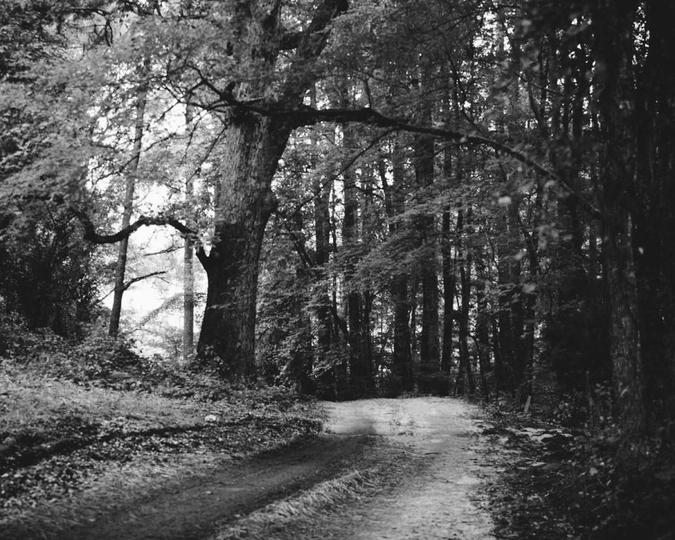

Digital Designer based in Gothenburg
Selected work
I design clear, considered digital experiences. Below is a selection of my work.

Skills & experience
Skills
- Skill 1
- Skill 2
- Skill 3
Experience
- Role, Company
- Role, Company
Tools
- Tool 1
- Tool 2
- Tool 3
- Tool 4
Education
- School, Programme
About me
A short introduction about you: how you work and what you care about. Replace this placeholder with your own words.
Portrait